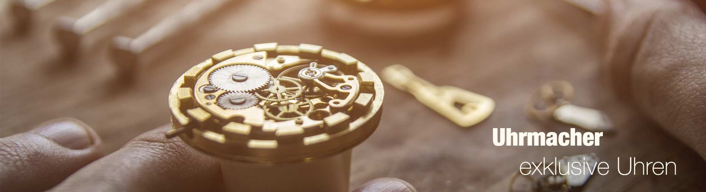
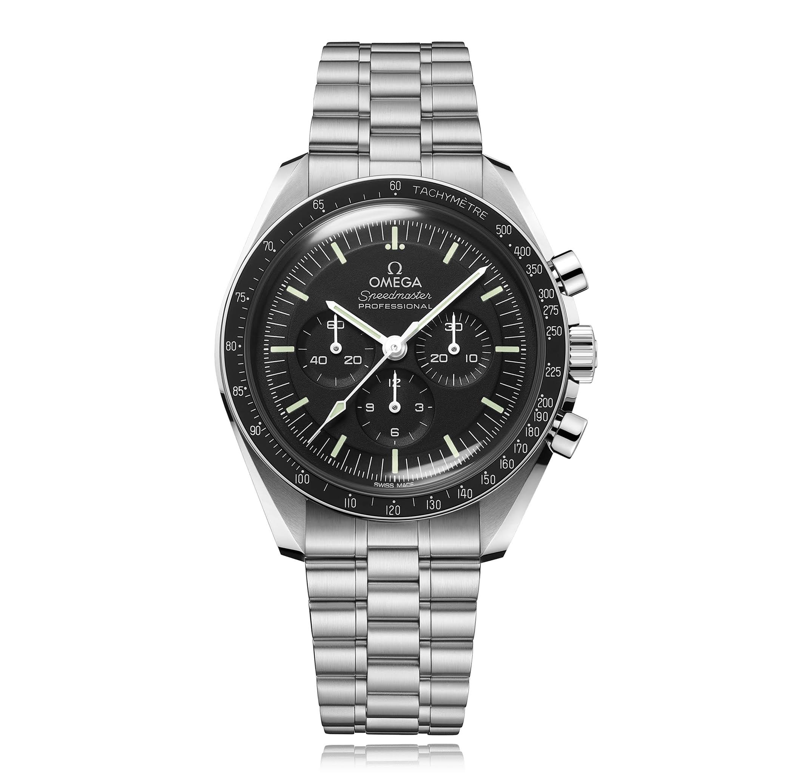
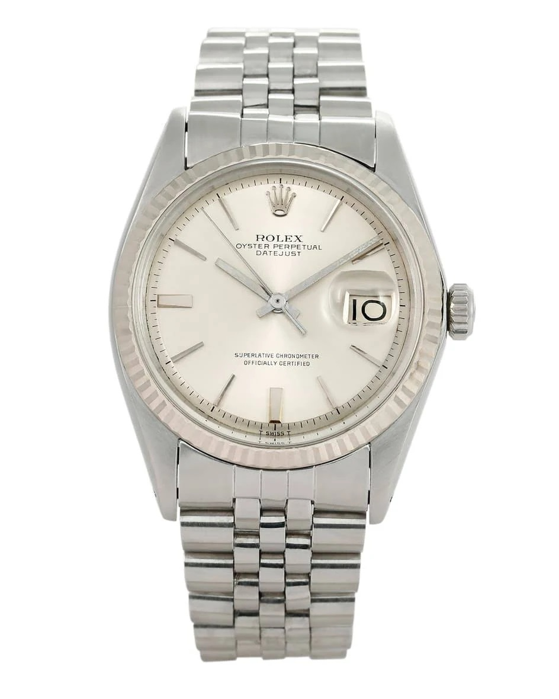
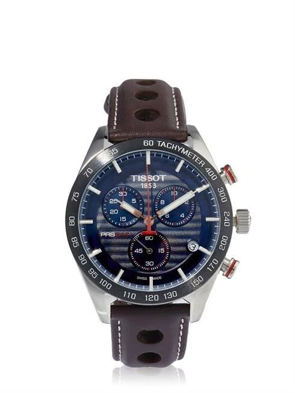
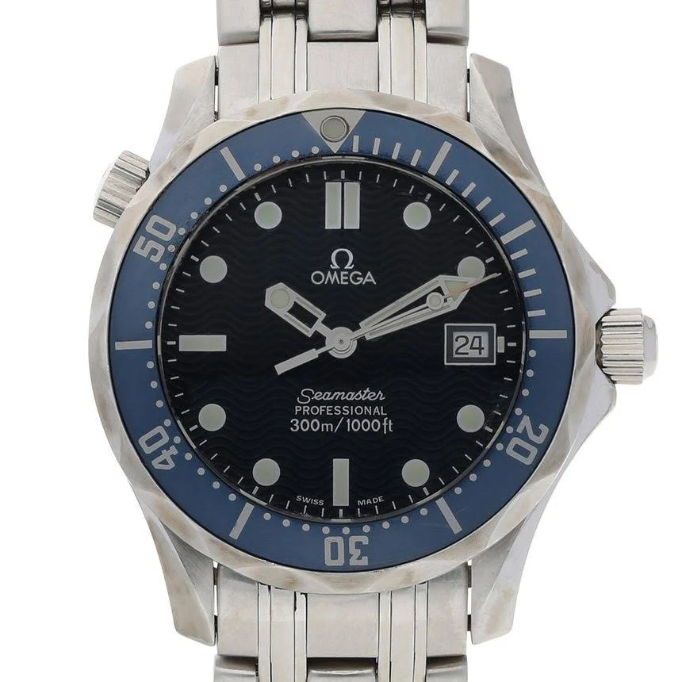

Die gute Adresse in Rosenheim für hochwertige Armbanduhren

Sie möchten eine fachmännisch geprüfte Luxus-Armbanduhr aus zweiter Hand erwerben? Sie suchen einen erfahrenen Servicepartner für Ihre Omega,
Longines, Vintage-Rolex, Zenith oder Ebel? Hier sind Sie richtig – willkommen bei den Uhrmachermeistern in Rosenheim!
Ob An- und Verkauf, Service oder Reparatur: Seit 1989 leben wir als Uhrmachermeister unsere Passion für hochwertige Armbanduhren.
In den Ladengeschäften sowie in unserem Online-Shop finden Sie regelmäßig ausgewählte Gebraucht-Modelle namhafter Marken.
Alle Uhren sind sorgfältig auf Echtheit und technisch erstklassigen Zustand geprüft beziehungsweise gewartet. Als Käufer erhalten Sie 1 Jahr
Gewährleistung. Sprechen Sie mich auch gerne an, wenn Sie an einem Verkauf Ihrer hochwertigen Marken-Armbanduhr interessiert sind.
Speedmaster Moonwatch Professional

Entdecken Sie den Speedmaster Moonwatch Professional Co-Axial Master Chronometer.
Die Speedmaster Moonwatch gehört zu den legendärsten Zeitmessern der Welt. Der beeindruckende Chronograph, der bei allen
sechs Mondlandungen dabei war, verkörpert perfekt den risikofreudigen Pioniergeist der Marke. Das Armband dieser 42-mm-Moonwatch
aus Edelstahl weist ein Design mit fünf gebogenen und gebürsteten Gliedern pro Reihe auf.
Rolex Datejust

Rolex Datejust Vintage Uhr von World of Time in Silber. Wir präsentieren hochwertige, gebrauchte Uhren, die aufwendig und
fachkundig aufgearbeitet werden. Dank einer Wasserdichtheit bis 100 Meter Wassertiefe wurde die Submariner zu einer der
beliebtesten Uhren bei Tauchern. Das dezente, sportliche Design schafft einen täglichen Begleiter.
TISSOT Uhr Silber Herren

Hochwertig verarbeitet.
Lederarmband.
Silberfarbenes Edelstahlgehäuse.
Verschluss: Verstellbarer Faltverschluss
drei
Zeiger, Chronograph.
Ziffernblattfarbe: blau.
Gehäusehöhe: 12 mm.
Gehäusedurchmesser: 42 mm.
Bandbreite: 19 mm.
Wasserbeständikeit:
10 bar.
TISSOT Logodetails. 100% Edelstahl.
Omega Seamaster

Typ: Unisex Uhr
Aufzug: Quartz
Durchmesser: 36.2 mm
Gehäuse: Steel
Band: Steel
Zifferblatt: Baton
Zifferblattfarbe: Blue
Alter: 2002
Original Box: vorhanden
Original Papiere: vorhanden
Ansprechpartner
Frau Monster
Tel: 08031176 562 898
Email: uhrenmacher@rosenheim.de
Ansprechpartner

Herr Monster
Tel: 08031176 562 899
Email: uhrenmacher@rosenheim.de